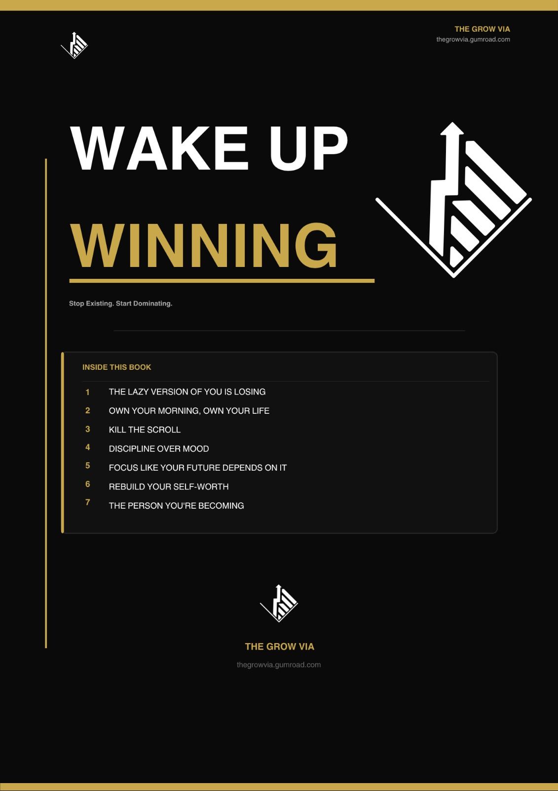

BUILDING A DIGITAL BRAND.
A tactical case study in audience building. Focusing on discipline, dopamine regulation, and systems-based self-improvement for young adults.
01. The Strategic Positioning
The self-improvement market is saturated with generic motivation. The Grow Via bypasses "hype" and focuses strictly on actionable mechanics: habit loops, time architecture, and delayed gratification.
To cut through the noise, the visual identity borrows heavily from tech and UI design. By utilizing progress bars, terminal code, and binary toggle switches (Black #000000, White #FFFFFF, and Neon #00FF00 / #FF6600), the brand appeals directly to logical, system-driven thinkers.
VISUALIZING DISCIPLINE
Translating abstract psychological concepts into stark, data-driven infographics.
Each asset is optimized for Instagram algorithms, prioritizing "Saves" and "Shares" by acting as a visual reminder or a mental framework the user wants to reference later.
The Discipline Staircase
SEO Focus: Compounding habits, daily consistency.
Visualizing the macro-impact of micro-actions. Minimalist staircase graphic illustrating how small, consistent friction builds long-term momentum.
The 24-Hour Radar
SEO Focus: Time management, deep work.
A visual reality check on daily time allocation. Designed to dismantle the "I don't have time" objection by visualizing a 24-hour cycle.
Action vs. Inaction
SEO Focus: Binary decision-making, overcoming procrastination.
Simplifying the psychological friction of starting a task into a stark, inescapable flowchart.
The Timeline View
SEO Focus: Long-term vision, delayed gratification.
Shifting the audience's mindset from short-term anxiety to macro-level consistency using a chronological axis.
Programming Discipline
SEO Focus: Habit systems, behavioral programming.
Formatting habit-building principles as pseudo-code to appeal directly to analytical, tech-adjacent demographics.
The Mental Toggle
SEO Focus: Comfort zone, active mindset shift.
A signature UI asset. Representing the active, conscious decision to switch from passive consumption to active execution.
Signal vs. Noise
SEO Focus: Dopamine detox, focus architecture.
A loading bar concept highlighting the direct correlation between muting external distractions and maximizing internal focus.
The Fingerprint Concept
SEO Focus: Personal accountability, self-mastery.
Using stark neon green against pure black to emphasize individual responsibility and unique potential.
The Targeting Reticle
SEO Focus: Goal alignment, hyper-focus.
A minimalist crosshair design symbolizing the elimination of multi-tasking in favor of singular dedication to an objective.
ALGORITHMIC PACING
Audience attention is the currency. Video assets are engineered with rapid pattern interrupts, kinetic typography, and psychology-driven hooks to maximize watch time and session duration.
Short-Form: Motivation is a Myth
Format: Instagram Reel / YouTube Shorts
Strategy: High-energy retention edit targeting the "motivation vs. discipline" debate.
Long-Form: The Discipline Framework
Format: YouTube Educational Content
Strategy: Deep-dive analysis of daily operating systems. Paced for educational value and deeper audience trust.

"WAKE UP WINNING" eBook
Audience growth is top-of-funnel. The ultimate goal is conversion. The Grow Via includes an end-to-end digital product funnel hosted on Gumroad.
SEO Focus: Morning routine optimization, deep work, daily discipline guide.
I authored, designed, and launched this product to capture the audience's intent to improve, transforming passive viewers into active consumers of a structured daily operating system.
Gumroad ↗ The E-BOOKS are Live on Gumroad.